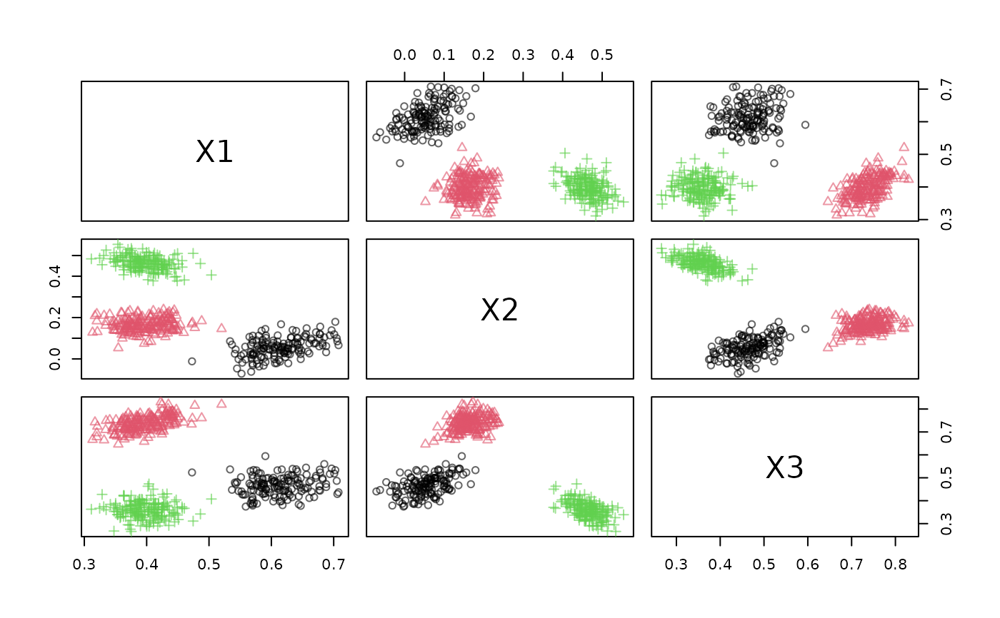
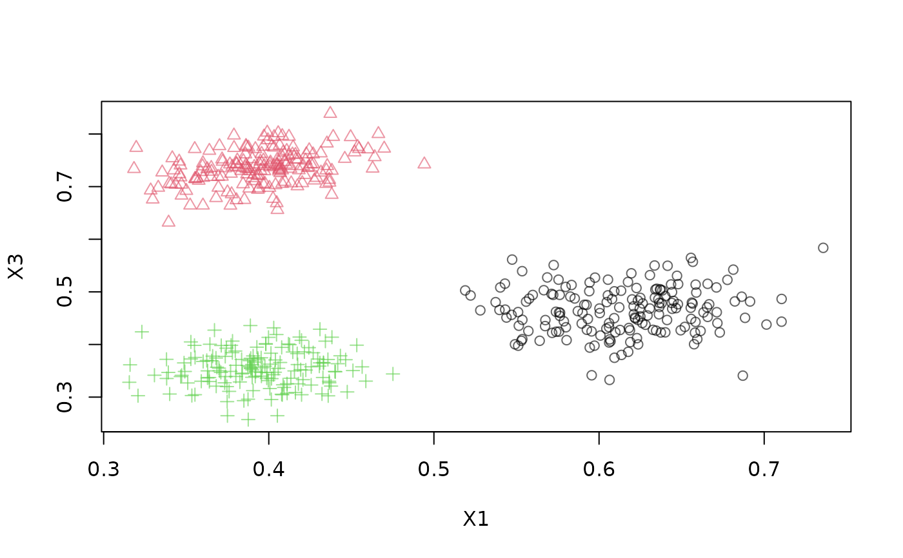
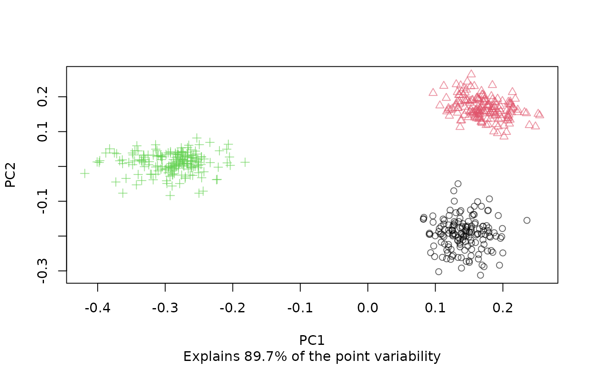

Abstract base classes for DSD (Data Stream Data Generator).
Details
The DSD class cannot be instantiated, but it serves as a abstract
base class from which all DSD objects inherit. Implementations can be found in the
See Also section below.
DSD provides common functionality like:
reset_stream()(if available)close_stream()(if needed)
DSD_R inherits form DSD and is the abstract parent class for
DSD implemented in R. To create a new R-based implementation there are only
two function that needs to be implemented for a new DSD subclass
called Foo would be:
A creator function
DSD_Foo(...)anda method
get_points.DSD_Foo(x, n = 1L)for that class.
For details see vignette()
See also
Other DSD:
DSD_BarsAndGaussians(),
DSD_Benchmark(),
DSD_Cubes(),
DSD_Gaussians(),
DSD_MG(),
DSD_Memory(),
DSD_Mixture(),
DSD_NULL(),
DSD_ReadDB(),
DSD_ReadStream(),
DSD_Target(),
DSD_UniformNoise(),
DSD_mlbenchData(),
DSD_mlbenchGenerator(),
DSF(),
animate_data(),
close_stream(),
get_points(),
plot.DSD(),
reset_stream()
Examples
DSD()
#> DSD is an abstract class and cannot be instantiated!
#>
#> Available subclasses in ‘package:stream’ are:
#> DSD_BarsAndGaussians,
#> DSD_Benchmark,
#> DSD_Cubes,
#> DSD_Gaussians,
#> DSD_MG,
#> DSD_Memory,
#> DSD_Mixture,
#> DSD_NULL,
#> DSD_R,
#> DSD_ReadCSV,
#> DSD_ReadDB,
#> DSD_ReadStream,
#> DSD_ScaleStream,
#> DSD_Target,
#> DSD_UniformNoise,
#> DSD_mlbenchData,
#> DSD_mlbenchGenerator
#>
#> To get more information in R Studio, type ‘DSD_’ and hit the Tab key.
# create data stream with three clusters in 3-dimensional space
stream <- DSD_Gaussians(k = 3, d = 3)
# get points from stream
get_points(stream, n = 5)
#> X1 X2 X3 .class
#> 1 0.4050989 0.44667298 0.3475992 3
#> 2 0.6763585 0.09054988 0.4570557 1
#> 3 0.4252745 0.12934062 0.7642332 2
#> 4 0.3707175 0.43533796 0.3756607 3
#> 5 0.4084845 0.11938364 0.6896738 2
# plotting the data (scatter plot matrix, first and third dimension, and first
# two principal components)
plot(stream)

plot(stream, dim = c(1, 3))

plot(stream, method = "pca")
